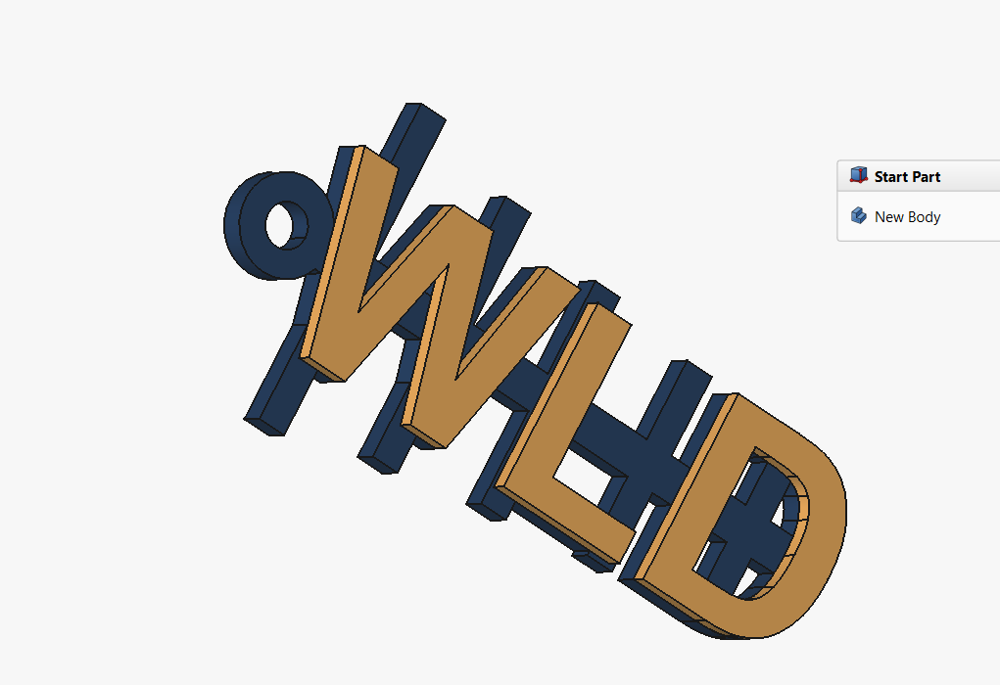
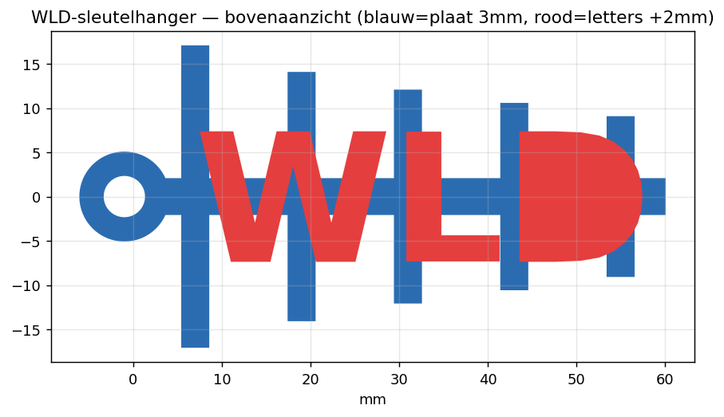

Project: WLD-sleutelhanger met Yagi-antenne
Een sleutelhanger waarin het silhouet van een Yagi-antenne de drager vormt van grote WLD-letters. Elke radioamateur herkent de Yagi meteen — dat is precies de bedoeling. Je oefent hier alles uit H01–H06 in één concreet, printbaar resultaat: schetsen met constraints, Pad, tekst met een ShapeString en tweekleurig printen.
Deze projectoefening is voorlopig enkel in het Nederlands beschikbaar.Cet exercice de projet n'est pour l'instant disponible qu'en néerlandais.This project exercise is currently only available in Dutch.
Niveau: basis → medior · Workbenches: Part Design, Sketcher, Draft, Part · FreeCAD: 1.1.1 · Richtduur: 60–90 min

- een schets met meerdere rechthoeken volledig bepalen met symmetrie-, gelijkheids- en maatconstraints
- een schets omzetten naar een 3D-vorm met Pad en een gat maken met Pocket
- tekst als 3D-vorm maken met een ShapeString en Part Extrude
- uitleggen waarom dit ontwerp zonder support printbaar is en waar de kleurgrens ligt
01Wat ga je maken?
Een hanger van ±60 × 34 mm: een Yagi-silhouet (boom, reflector, gevoed element en drie directors) met daarop grote WLD-letters die 2 mm boven de basis uitsteken. De basis is 3 mm dik; de letters lopen door tot 5 mm, zodat je in de slicer een kleurwissel op Z = 3 mm kunt zetten.
Maattabel
| Onderdeel | Maat |
|---|---|
| Boom (horizontale balk) | 60 × 4 mm |
| Dikte antenne-basis | 3 mm |
| Elementbreedte (alle 5) | 3 mm |
| Reflector (x = 7) | lengte 34 mm |
| Gevoed element (x = 19) | lengte 28 mm |
| Director 1 (x = 31) | lengte 24 mm |
| Director 2 (x = 43) | lengte 21 mm |
| Director 3 (x = 55) | lengte 18 mm |
| Oog: buiten / gat | Ø10 / Ø4,5 mm, middelpunt x = −1 |
| Letters "WLD" | tekengrootte 20 (vet), totale hoogte 5 mm |
De x-posities zijn telkens het middelpunt van een element, gemeten vanaf het linkeruiteinde van de boom.
Bij een echte Yagi is de reflector het langste element en worden de directors naar voren toe korter. We tekenen geen elektrisch correcte antenne — het is een sleutelhanger — maar het silhouet moet kloppen, anders "leest" een collega-amateur het niet als Yagi.
02Deel 1 — Document, Body en de Yagi-schets
Workbench: Part Design voor Body, schets, Pad en Pocket — precies zoals in H04–H06. Voor de letters gebruik je verderop Draft (ShapeString) en Part (Extrude).
- PDNieuw document → werkbank Part Design → Body maken.Waarom: de Body is de container waarin de hele antenne-basis als één samenhangend massief groeit (H04).
- SKSchets maken op het XY-vlak.Waarom: het XY-vlak is straks de bouwplaat van de printer. De plattegrond dáár schetsen = automatisch de juiste printoriëntatie, plat en zonder support.
- SKTeken een rechthoek rechts van de oorsprong: de boom. Ruw is goed genoeg — maten komen zo.Waarom: eerst de vorm, dan de maten via constraints. Dat is parametrisch denken (H04/H05).
- SKLeg de boom symmetrisch om de X-as (symmetrieconstraint, of twee gelijke afstanden van 2 mm tot de X-as). Bemaat: lengte 60, hoogte 4, linkerzijde op x = 0.Waarom: de hele hanger is spiegelsymmetrisch rond de boomas. Met y = 0 als middellijn positioneer je élk element straks met dezelfde eenvoudige logica.
- SKTeken vijf staande rechthoeken die de boom kruisen, ruwweg op de posities uit de maattabel — bewust langer dan de boom breed is.Waarom: overlappende vormen versmelten bij het padden tot één massief. Overlap is hier je vriend: niets komt los te staan.
- SKMaak één element 3 mm breed en de andere vier gelijk (gelijkheidsconstraint, H08).Waarom: wil je later een andere elementbreedte, dan wijzig je één maat en volgen de andere vier vanzelf.
- SKLeg elk element symmetrisch om de X-as en bemaat de lengtes: 34, 28, 24, 21, 18 mm.
- SKPositioneer horizontaal: maatconstraint van de linkerzijde van elk element tot de Y-as: 5,5 / 17,5 / 29,5 / 41,5 / 53,5 mm (= middelpunt − 1,5).
- SKWerk door tot de schets volledig bepaald is (H05) en sluit ze.Waarom: een onderbepaalde schets kan "verschuiven" bij latere wijzigingen. Volledig bepaald = voorspelbaar en robuust.
- PDPad, lengte 3 mm.Waarom 3 mm: dun genoeg voor een lichte hanger, dik genoeg om stevig te zijn — bij 0,2 mm-lagen vijftien volle lagen (richtwaarde, H16).

03Deel 2 — Het sleutelringoog
- SKNieuwe schets op het XY-vlak (niet op het bovenvlak van de boom).Waarom: een schets op een origineel vlak i.p.v. een gemaakt vlak is robuuster tegen het topological naming-probleem (H19).
- SKTeken één cirkel, middelpunt op de X-as. Bemaat: straal 5, middelpunt op x = −1. Volledig bepalen, sluiten.
- PDPad, 3 mm. Het oog overlapt de boom 4 mm en versmelt ermee.
- SKNieuwe schets op het XY-vlak: cirkel met zelfde middelpunt (x = −1), straal 2,25. Sluiten → Pocket, optie door alles (H09).Waarom Ø4,5: een sleutelring is ±3–4 mm dik draad én verticale gaten printen bijna altijd iets ondermaats (H16). Ruim tekenen, printen, meten, bijstellen.
04Deel 3 — De WLD-letters
De letters maken we bewust buiten de Body, als apart object: zo krijgen ze een eigen kleur en kun je ze apart exporteren voor tweekleurig printen (vergelijk H15 en H17).
- DRWerkbank Draft → maak een ShapeString (H17): tekst WLD, grootte 20, vet lettertype via het pad naar een .ttf, op Windows bv. C:\Windows\Fonts\arialbd.ttf (Arial Bold).Waarom vet: dunne letterlijnen worden fragiele wandjes van één à twee printbanen. Vet = stevig en strak printbaar.
- DRZet de Placement (eigenschappen, Position) zó dat de tekst gecentreerd op de antenne ligt. Startpunt: x ≈ 9, y ≈ −7. Neem het bovenaanzicht en schuif bij tot élke letter de boom of minstens één element kruist.Waarom: elke letter wordt straks een massief deel. Een letter die nergens de basis overlapt, valt na het printen letterlijk los.
- PTWerkbank Part → selecteer de ShapeString → Extruderen: richting Z, lengte 5 mm, als massief.Waarom 5 en niet 2: de basis is open (gaten tussen de elementen). Letters die pas op 3 mm beginnen, zweven daar in de lucht — onprintbaar zonder support. Van bouwplaat (Z=0) tot 5 mm = overal verbonden én 2 mm reliëf.
- PTVerberg de oorspronkelijke ShapeString (selecteer, spatiebalk).
05Deel 4 — Kleuren en eindcontrole
- PDGeef de Body navy en het letterobject amber: rechtsklik op het object in de modelboom → uiterlijk/kleur aanpassen.Waarom: de kleurgrens documenteert je printplan — iedereen die het bestand opent ziet meteen waar kleur 1 stopt en kleur 2 begint.
- PDDraai het model rond en controleer: alle elementen vast aan de boom, elke letter overlapt de basis, het gat is open, niets zweeft.
06Naar de printer
Plat printen zoals gemodelleerd, geen support. Eén extruder: exporteer beide objecten samen als STL (H23) en zet in de slicer een kleurwissel op Z = 3 mm. Multi-material: exporteer Body en letters elk als eigen STL en wijs per deel een kleur toe. Alle getallen zijn richtwaarden — kalibreer op je eigen printer.
07Veelgemaakte fouten
- Schets niet volledig bepaald → het model vervormt onverwacht bij een latere wijziging. Elke vrijheidsgraad oplossen vóór je de schets sluit (H05).
- Letters beginnen op Z = 3 in plaats van Z = 0 → losse, zwevende letterdelen tussen de elementen. Altijd vanaf de bouwplaat extruderen.
- Letter raakt geen enkel element → los onderdeel na het printen. Bovenaanzicht nemen en verschuiven tot alles kruist.
- Gat exact op ringdikte getekend → ring past niet: gaten printen ondermaats (H16). Ruimer tekenen en kalibreren.
- Elementen te fijn (< 2 mm breed) → uiteinden breken af aan de sleutelbos. 3 mm breed bij 3 mm dik is het praktische minimum voor dit open ontwerp.
- Bij een open basis extrudeer je reliëf altijd vanaf de bouwplaat — anders zweeft het.
- Eén maat + gelijkheidsconstraints verslaat vijf keer dezelfde maat intypen.
- Elke letter moet de basis overlappen: overlap = mechanische verbinding.
- Kleurgrens = Z-hoogte van de basis; dat regel je in de slicer, niet in FreeCAD.
1. Vervang WLD door je eigen roepletters en pas de boomlengte aan tot het past. 2. Maak director 3 langer door één maatconstraint te wijzigen en kijk hoe het model volgt — dát is parametrisch ontwerpen (H07). 3. Voeg een zesde element toe: welke stappen herhaal je?
Klaar-terwijl-je-kijkt: een macro die dit hele model parametrisch opbouwt (Macro → Macro's… → uitvoeren), zodat je een controle hebt. WLD_sleutelhanger.FCMacro ·